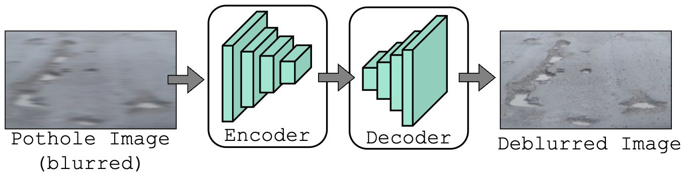
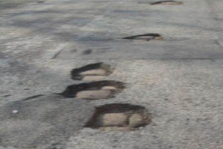
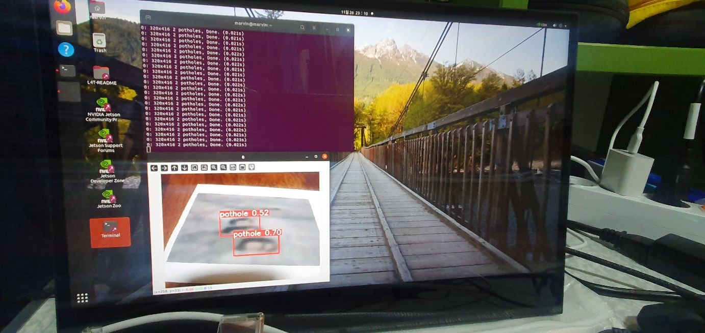

Making Pothole Detection More Robust to Motion Blur
A detector that works on a clear road photograph can struggle when a camera is moving. In this project, we paired an image-deblurring network with a pothole detector and investigated how that combination performed under blur and on embedded hardware.
I worked on training and evaluating models in Python and deploying the system on an NVIDIA Jetson board. The coauthored paper is titled Enhancing Pothole Detection Robustness to Blurred Images and Real-Time Implementation on Embedded Boards.
Read CJSJ submission (PDF)Download PDF
2024–25 Columbia Junior Science Journal submission · Semifinalist.
The gap between clear images and moving cameras
Motion blur removes edges and texture that help distinguish a pothole from the surrounding road. A system intended for vehicle-mounted cameras needs to handle that degradation, as well as detect and localize the damage.
We investigated an explicit restoration stage: recover useful visual structure before passing the image to an object detector. The goal was to measure whether deblurring improved the downstream task, not just the appearance of an image.
Restoration before detection

The first stage is an encoder-decoder restoration network. Its pixel-level L1 loss encourages agreement with the reference image, while a perceptual loss compares VGG19 feature activations to retain higher-level visual structure.



The second stage detects potholes and returns bounding boxes. The presentation breaks its objective into localization, confidence, and classification terms:
Ldetector: localization + confidence + classification
- Localization: penalize errors in box position and dimensions.
- Confidence: distinguish object-containing regions from background.
- Classification: identify potholes in object-containing regions.
This distinction matters: recognizing that a pothole exists does not guarantee that its bounding box is accurate.
Evaluating robustness to blur
The study used Roboflow pothole images and the Google Bangkit 2021 dataset, covering both longer-distance and closer road views. The manuscript describes combining the datasets with an 80/20 training/test split; the presentation also lists the component datasets’ original sizes.
We compared EfficientDet, RetinaNet, FocalNet, YOLOv5, and DETR under three conditions: clear images, blurred images, and blurred images processed by the proposed restoration network.
| Detector | Clear | Blurred | Deblurred |
|---|---|---|---|
| EfficientDet | 65.4 | 48.1 | 54.4 |
| RetinaNet | 66.7 | 49.5 | 54.8 |
| FocalNet | 70.1 | 53.7 | 57.9 |
| YOLOv5 | 74.7 | 54.7 | 60.1 |
| DETR | 77.5 | 57.9 | 65.2 |
Deblurring improved AP for every architecture relative to the blurred condition. For YOLOv5, AP rose from 54.7 to 60.1: a gain of 5.4 AP points, or approximately 9.9% relative improvement.
The presentation separately reports a pothole true-positive rate of 66.9% under blur and 89.9% after restoration. This recognition improvement should be read alongside AP: the presentation identifies further improvement in localization as an open problem.
From model comparison to embedded demonstration
DETR achieved the highest AP in the comparison, but its computational and memory demands motivated a different choice for the embedded implementation. We selected YOLOv5 and deployed the system on an NVIDIA Jetson board.

The presentation also outlines a mapping workflow: collect latitude and longitude when a pothole is detected, then visualize detections to identify recurring problem areas. That connects detection output to a practical road-maintenance use case.
Sources: the coauthored CJSJ submission and the supplied KSEF presentation. Figures are extracted from the presentation and retain their original content. Results are reported from the original research.